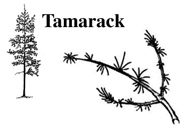

Balsam Fir
Black Spruce
Jack Pine
Lodgepole Pine
Tamarack
White Spruce
Balsam Poplar
Green Ash
Manitoba Maple
Trembling Aspen
Willow
White Birch
Balsam Fir (Abies balsamea) L.
- pyramidal crown with slender, horizontal branches
- height from 15 to 20 metres
- needle-shaped leaves, flat, blunt and soft, dark green on top surface, two white strips on lower surface, 2 to 4 cm in length; arranged singly in two rows on opposite sides of the twig
- cones are oblong, purplish in color, 5 to 10 cm long; sit upright in top branches of tree
- bark is gray and smooth, becoming rough with age, but retaining smooth patches where resin blisters form
- found on a wide range of organic and inorganic soils; can tolerate some acidic conditions
- very shade tolerant; wood used for pulp and paper; a common
Christmas tree species
Black Spruce (Picea mariana) L.
- in stands, develops a straight trunk with very little taper from top to bottom
- 12 to 20 metres in height
- leaves needle-shaped, 1.5 cm in length, sharp, stiff and borne singly on stem
- cones about 2.5 cm long, pointed and have an egg shape
- bark is thin and scaly with a dark greyish-brown colour
- found in pure stands on wet organic soil; can also be found on a variety of mineral soils
- wood soft, relatively strong and nearly white
- of great importance to the pulp wood industry because its
long fibres add strength to paper products
Jack Pine (Pinus banksiana) L.;(oskahtik) Cree
- branchy with irregular crowns
- normal height can reach 12 to 18 meters
- leaves are two flat needles in a sheath and slightly twisted
- cones are hard and curve slightly
- bark is brown to gray, darkening with age; surface flaky, becoming furrowed and plate-like at maturity
- survives well on poor sites such as sandy and rocky soil
- wood is moderately hard and heavy, not particularly strong
- trees are used for general construction, pulp, railway ties
and mine timbers
Lodgepole Pine (Pinus contorta var. latifolia) L. ;(minahtik) Cree
- tall, slender, narrow crowned tree, reaches height of 15 to 30 metres
- winged seeds produced in hard, straight cones (2.5 to 5 cm in length)
- needle-shaped leaves, 3 to 7 cm long, twisted, sharp, borne in groups of two on the stem
- bark is rough, scaly and brownish to gray or blackish on older trees
- found in variety of soil types, but best growth occurs on well-drained loam sites
- very intolerant of shade and competition; poor alkali tolerance
- naturally confined to Cypress Hills in Saskatchewan, its most
easterly location

Tamarack (Larix laricina) L.; (wakinakan) Cree
- straight trunk with narrow, open, conical crown
- 15 to 23 metres in height
- deciduous soft green needles grown in clumps; turn orange-yellow in the autumn and fall off
- cones are small, brown and oval
- bark is brown and smooth on young trees, turning reddishbrown and flaky on mature trees
- found growing in cold, wet and poorly drained places such as muskegs
- shade intolerant and is rarely found in pure stands
- used for railway ties, poles, boat building and pulpwood

White Spruce (Picea glauca) L.; (iyinahtik) Cree
- pyramidal shape; 20 to 25 metres
- cones are 2-5 cm long, slender and cylindrical
- sharp, four-sided bluish-green needles
- often found growing on moist, well drained silty soils and growing in a mixture of other trees
- quite a shade tolerant tree and able to maintain its branches low on the trunk, except in dense stands with little light penetration
- the roots are pliable enough that Indian people could use them to lace together birch bark on canoes
- an important tree to the lumber and pulp industries
Balsam (Black) Poplar (Populus balsamifera) L.; (mayimitos) Cree
- medium to large tree with straight trunk, narrow open crown
- 18 to 24 meters
- leaves oval, sharp tip, toothed margins, shiny green upper surface and grayish green lower surface
- bark smooth, greenish gray to grayish brown, becoming furrowed into thick flat topped ridged with age
- male and female flowers borne of different trees
- seeds formed in pods; split in late spring to release hairy seeds
- adapted to wide range of soil texture and moisture; low shade t tolerance, prolific suckering
- shelterbelt tree; buds aromatic
Green Ash (Fraxinus pennsylvanica) L.; (akimahsk) Cree
- narrow, oval crowned, upright tree
- 6.5 to 15 metres
- bark brownish gray with shallow fissures
- compound leaf, consisting of seven oval shaped leaflets, 8 to 12 cm in length
- leaf arrangement opposite
- male and female flowers inconspicuous; found on separate trees
- narrow, winged seeds; 2.5 to 5 cm in length
- does best on well-drained soils; fair to good alkali intolerance
- leaves appear late in spring and drop early in fall
- drought tolerant and winter hardy; excellent shelterbelt tree

Manitoba Maple (Acer negundo) L.; (sokowahtik) Cree
- open, spreading crown; has irregular shape where the trunk divides near the ground into a few crooked limbs
- 6.5 to 14 metres
- bark brownish gray to black, becoming furrowed with age
- only Canadian maple with leaves that are divided into several parts or leaflets (ranging from 3 to 7 in number); irregularly lobed
- male and female flowers borne in clusters on separate trees; winged, paired, straw coloured seeds
- often found along lakeshores and banks of streams; winter hardy
- children like this tree because the branches make it easy to climb
- wood is used for box construction or as 'rough lumber';
the sap can also be used to make maple syrup
Trembling Aspen or White Poplar (Populus tremuloides) L.;(mitos) Cree
- slender tree with a long cylindrical trunk and a short rounded crown
- tree is known as a 'fire species' because it does so well in reproducing after a fire
- roots form new trees by 'suckering'
- bark smooth, white to greenish, turning gray and black streaked with age
- leaves are circular to heart shaped with a slight point at the tip and small teeth on the edges
- leaf stalk is flat which allows the leaf to flutter or 'tremble' in the wind, creating a noise; some Indian people referred to the aspen as 'noisy leaf'
- often grows in pure stands on almost every type of soil; intolerant of shade
- used mainly for pulpwood, although some select logs may be
used for veneer and plywood
Willow (Salix acutifolia) L.; (nipisi) Cree
- wide spreading crown, trunk tends to have multiple stems
- 5 to 14 metres
- shiny dark green leaves, 6 to 12 cm in length and 1 - 2 cm wide, finely toothed margins
- male and female flowers on separate trees; small fruit pods split when mature releasing seeds on tufts of silky hair
- performs well in most well-drained sites but will withstand flooding for up to several weeks
- shelterbelts and ornamental plantings
White Birch (Betula papyrifera) L.; (iyinahtik) Cree
- narrow, oval, open crown with a slender trunk
- 6 to 20 metres tall
- bark is thin, smooth, reddish-brown on young trees, becoming chalking white with age; peels easily into sheets
- leaves triangular or egg-shaped, 8 cm long, toothed margins on majority of leaf
- winged seeds, 3 - 4 cm long that hang from branches
- does best on moist, well-drained sandy or silty loam soils
- shade intolerant, thrives best in burned over areas and is restricted to openings in mature forests
- susceptible to Bronze Birch borer and Birch Dieback
- Saskatchewan's provincial tree
Saskatchewan is also home to many native shrubs such as the choke
cherry, red-osier dogwood, saskatoon, and buffaloberry.